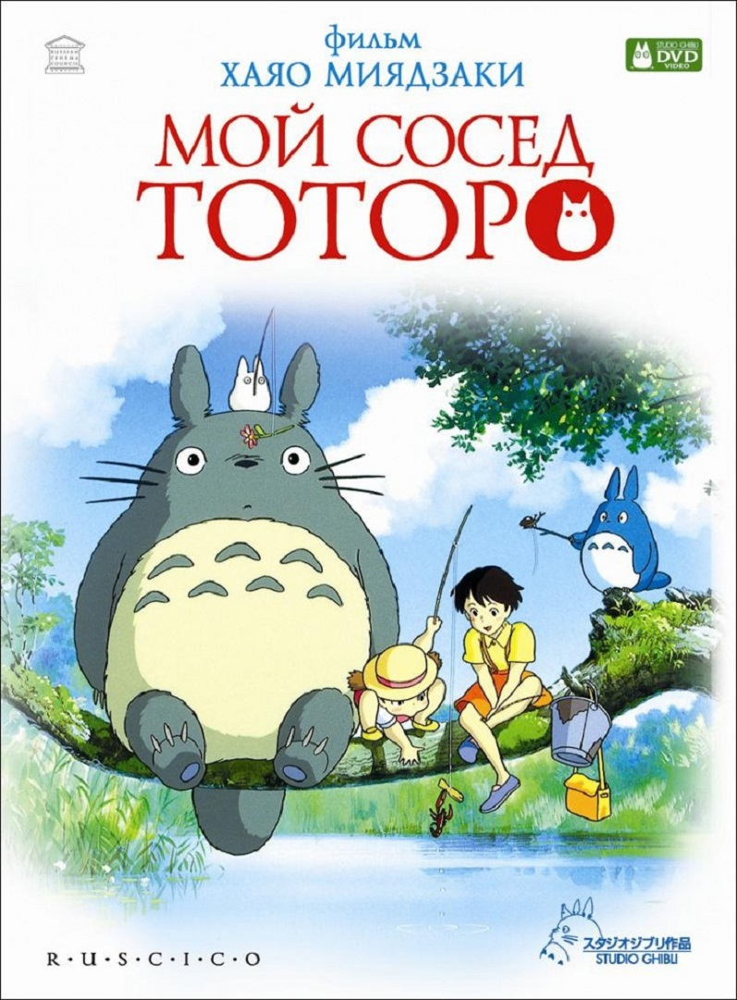

|  | |
| Переехав в деревню, две маленькие сестры, старшая Сацуки и младшая Мэй, знакомятся с лесным духом, которого Мэй называет «Тоторо» (искаженное «тролль»). Подружившись с девочками, Тоторо не только устраивает им воздушную экскурсию по своим владениям, но и помогает повидаться с мамой, которая лежит в больнице. | |
| Дата выхода: 1988 г. (РФ) | Жанр: Аниме, Мультфильм |
| Страна: Япония | Режиссёр: Хаяо Миядзаки |
| Музыка: Дзё Хисаиси | Длительность: 86 мин. |